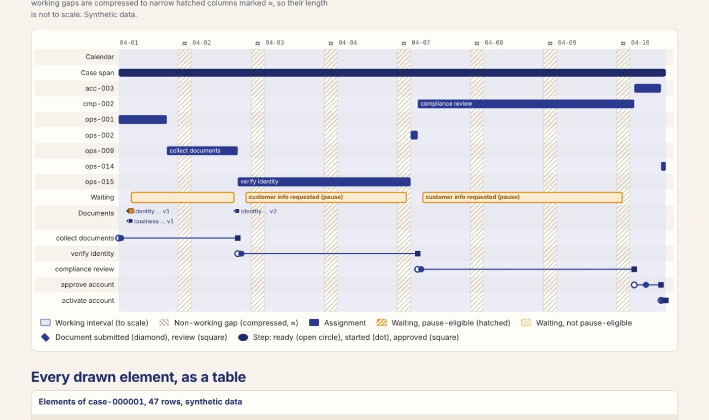
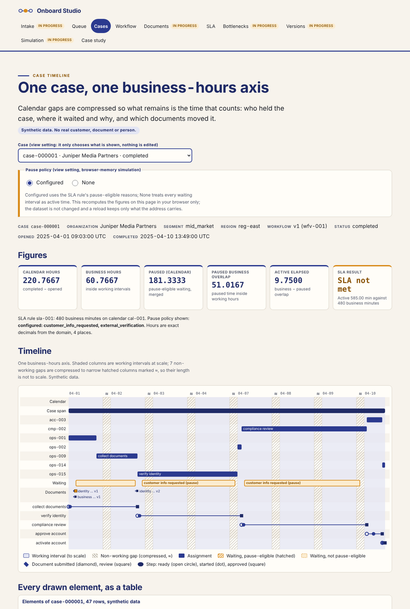
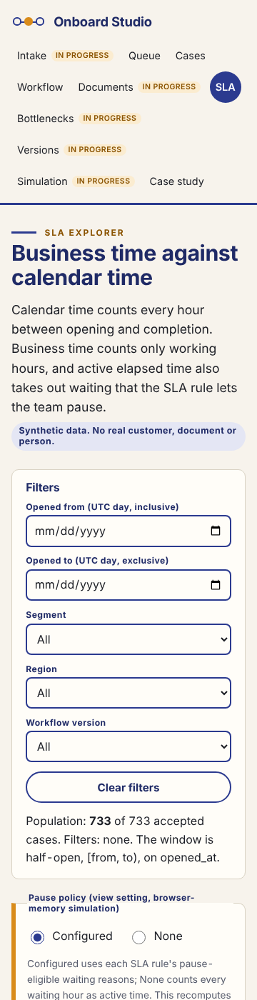

Dashboard · Business systems analysis · FastAPI · React · 2026-10
Which Onboarding Workflow Should Be Adopted, and How Should Exceptions Be Handled?
Onboard Studio: a case timeline on a business-hours axis. Cases bound to immutable workflow versions, dependency-ordered steps, append-only document versions, independent approvals, working calendars with holidays, pause policies and SLA attainment on active elapsed time. One contract in Python (verified on PostgreSQL in GitHub Actions) and TypeScript (the static demo), both checked against a hand-calculated fixture. Synthetic data; project 02 of the Business Data Lab.

- Problem
- Onboarding reviews argue from calendar time: a case opened on Friday afternoon and finished Monday morning "took three days". Customer waiting is counted as employee work, waiting history…
- Role
- Built and written by Rishit Raj Mathur; the case study names its sources and checks.
- Tools
- Python 3.11 (exact rational durations, Kahn cycle check), PostgreSQL 16 (append-only and immutability triggers), FastAPI 0.162 (commands with idempotency keys, 401/403/409/422 contracts), SQL reference recomputation of business hours, TypeScript + React 18 + Vite (integer-millisecond durations), Playwright 1.55 (journey, 4 widths, 200% zoom), GitHub Actions (postgres:16 service, hosted runners only), 279 Python tests, 150 TypeScript golden checks, 35 browser tests
- Status
- Case study with a live demo
- Evidence
- Open Onboard Studio · Code on GitHub

Everything is synthetic: the firm, its 40 customers, 740 cases and every figure come from a seeded generator whose designed relationships and injected defects are published in an injection manifest. The public site is a static demo: its calculations run in the browser over a published snapshot, case actions live in memory and a reload restores the snapshot. The transactional behaviour (publishing a version, approvals, pauses, completion, conflicts) is verified separately on GitHub-hosted runners against a transient PostgreSQL. Built from a written specification by a coordinating session delegating bounded work to implementation subagents; not a measurement of any real business.
01The problem
Onboarding reviews argue from calendar time: a case opened on Friday afternoon and finished Monday morning "took three days". Customer waiting is counted as employee work, waiting history is lost when a case is reassigned, and the workflow template is edited while cases are open, so two versions cannot be compared on the same terms.
Onboard Studio defines the time arithmetic first. Every duration is computed on a working calendar with explicit timezone and holidays; customer waiting is a pause with a configured, versioned reason; a case binds one immutable workflow version; and the timeline, the SLA explorer and the version comparison all read the same numbers.
02What I built
Two implementations of one contract, checked against a hand calculation and each other.
- The contract: half-open calendar intervals, holidays subtracted (a weekend holiday subtracts nothing), pauses clipped and merged, active elapsed as business time minus pause-eligible overlap, SLA on active time, backlog as-of a cutoff, rates from aggregated numerators and denominators.
- A known-answer fixture written first: a case opened Friday 16:00 and completed Monday 10:00 is 66 calendar hours, 2 business hours, and 1 active hour when the Friday 16:30 to Monday 09:30 customer wait is pause-eligible (2 when it is not). A standard-library script reproduces it from the records.
- The Python domain, PostgreSQL schema and FastAPI commands: publish a version only without dependency cycles; create a case on a published version; submit, reject and resubmit documents as append-only versions; unlock steps only when prerequisites are approved; approve only by a reviewer with the right role who is not an assignee; pause only for configured reasons; complete only with every required step and document satisfied; never reopen.
- The static site: the same contract in TypeScript on integer milliseconds, a case timeline on a business-hours axis, the workflow canvas with an accessible ordered list, the SLA explorer with a pause-policy view toggle and CSV export, a work queue and a case study.
03How it was built
- 01
Count the hours that count
The fixture's 66 calendar hours contain two working hours: Friday 16:00 to 17:00 and Monday 09:00 to 10:00. The customer wait from Friday 16:30 to Monday 09:30 overlaps exactly one of them, so the case was actively worked for one hour. The SLA of 480 business minutes is judged on that hour.
- 02
Exact arithmetic, then rounding once
Both implementations keep durations as exact integers (milliseconds in the browser, rational seconds in Python) and round only when printing four decimals. The TypeScript build caught the Python reference landing just below a half-up tie after accumulating decimal division error; the Python side now uses exact fractions and the two agree on every cell of a 5,112-cell comparison over the snapshot.
- 03
Reject at the gate, flag at the edge
Self-approvals, decisions on an already-decided step version, completed cases with a required document missing and waits with an unconfigured reason are rejected at ingest with their raw rows kept. A pause outside working hours is accepted, contributes zero business hours and is flagged, because the customer did wait even if nobody was at work.
- 04
Two modes, disclosed
Mode A is the backend on a GitHub-hosted runner with a transient PostgreSQL: 279 tests including the adversarial cases. Mode B is the public site over a published snapshot; the only controls that change what you see are view settings, and the page says so.
04Results
The case timeline on the synthetic snapshot (case 000001: 220.77 calendar hours, 60.67 business hours, 9.75 active hours, SLA not met against 480 business minutes):

The SLA explorer on a phone:

What the data supports. On the same calendar and population, workflow v2 cases average 5.87 active hours against 9.24 for v1 with 255 handoffs over 282 cases against 484 over 430; the enterprise segment reworks 29.0% of cases against 17.2% and 14.2%; region North waits 59.1 hours per case against 26 to 31 elsewhere. Overall, 380 of 712 completed cases met the SLA (53.4%), 18.6% of cases needed rework and 93.1% of first submissions were approved. These are the generator's designed relationships, published in its injection manifest, found by the site; they are not findings about any real business.
Checks. The reference script reproduces the fixture (155 checks); 279 Python tests pass against PostgreSQL 16 on a GitHub-hosted runner, including the adversarial cases (missing document, conflicting decisions, pause outside working hours, dependency cycle, overwritten resubmission, self-approval, reopen); 150 TypeScript golden checks and 35 Playwright tests pass; the TypeScript and Python pipelines agree on all 5,112 cells of a grouped comparison. Evidence: the CI runs and the verification ledger in the source tree.
Not built yet. Reassignment and migration commands return 501; intake, document review, bottleneck, version-comparison and simulation screens are stubs; no independent reviewer pass has run on this project yet.
05What I'd do next
- Build reassignment and migration (C07, C10) with audit mappings, and the intake, document review, bottleneck, version-comparison and simulation screens.
- Add the holiday calendar editor and per-organization timezones to the explorer.
- Projects 03 to 10 of the lab follow the same gates.